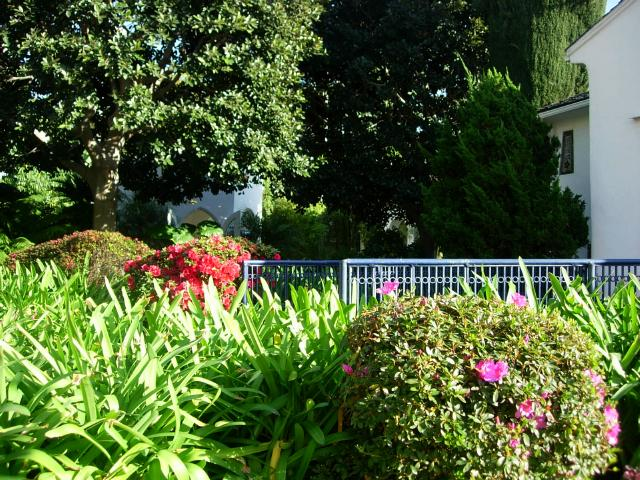
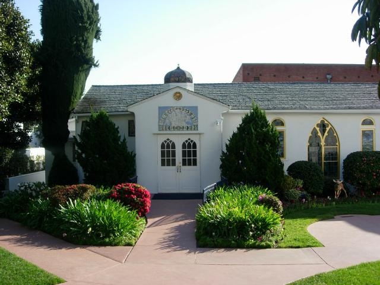
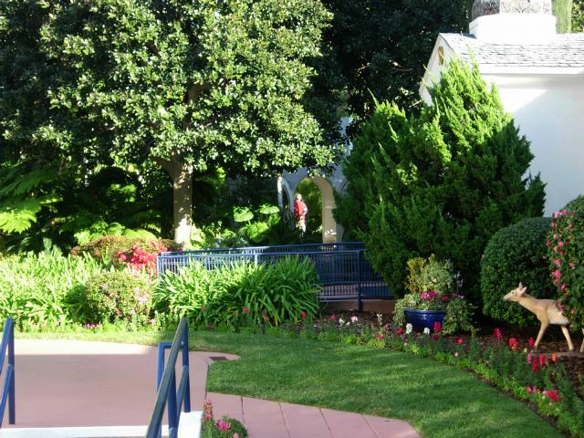
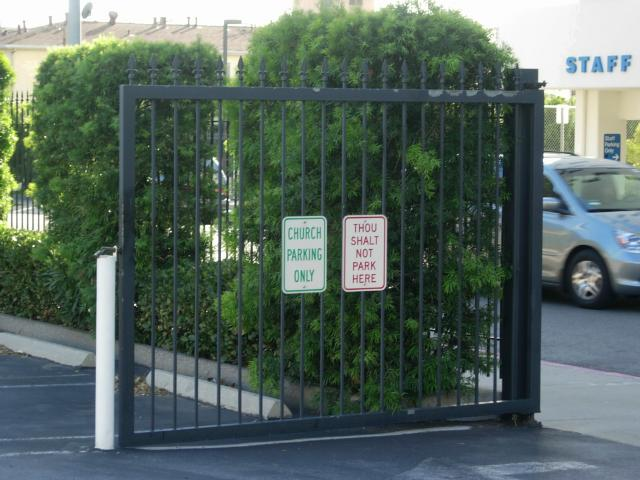
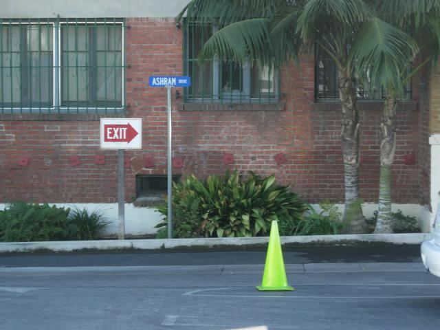

Los Angeles
Visited friends. Did a jala yoga pilgrimage to Wolfgang Puck's Chinoise on Main, one of the best restaraunts in LA. (Jala yoga means union with food.) Spent time meditating at Hollywood Temple (below) and Lake Shrine

Meditation temple (mandir) on the grounds (rear of photo) has blue and crystal stained glass windows that do wonderful things to sunlight

Bro. Bhaktananda tells stories of how the temple fell into Guruji's hands, piece by piece. One day he said "Divine Mother is going to give us stained glass". He went to a construction supply company. No glass. He asked the stocker to ask in the office. No glass. He started poking around in a pile of dirt with other supplies on top. Stained glass. It had been there longer than any of the people working there. He also wanted lotus-shaped sconces. Not to be found. So one day someone wandered in to look at the construction being done inside. Had lotus-shaped sconces. And on and on.

Lawn in front of temple. Stairs in foreground lead to the basement of India Hall.


Alley behind the temple. There's a postulant ashram there. Bro. Anandamoy told the story that when he was living there, there was a body repair shop next door, where they turned up the radio to drown out the hammers and drills. He said it taught him to concentrate.